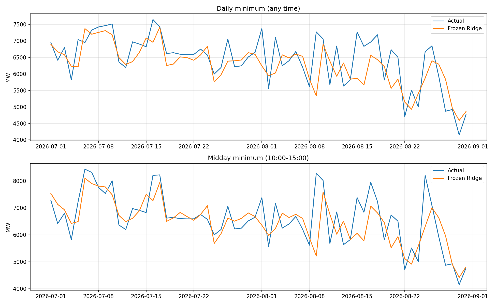

Training is unchanged: 990 days before April 1, 2026. Ridge alpha=10 was previously selected using fixed validation windows. No retuning, no fitting on April-August data. Reconstructed models reproduce the previous April-June test MAEs. All prior files remain unchanged.
Test: 62 complete days, 2,976 half-hour records from our data. Targets are daily minimum and 10:00-15:00 minimum. This is rolling one-day evaluation with previously observed demand lags and same-day observed weather, not a two-month-ahead forecast. Prior runs have used portions of these data, so this is not a wholly untouched research holdout.
| Target | Model | Period | Days | MAE (MW) | RMSE (MW) | MAPE (%) | R2 | Bias (MW) |
|---|---|---|---|---|---|---|---|---|
| Daily minimum (any time) | Ridge (frozen March 31) | July-August | 62 | 433.337 | 578.463 | 6.717 | 0.436 | -165.465 |
| Daily minimum (any time) | Ridge (frozen March 31) | July | 31 | 264.212 | 329.274 | 3.889 | 0.487 | -112.965 |
| Daily minimum (any time) | Ridge (frozen March 31) | August | 31 | 602.461 | 748.878 | 9.545 | 0.286 | -217.966 |
| Midday minimum (10:00-15:00) | Ridge (frozen March 31) | July-August | 62 | 514.032 | 719.192 | 7.687 | 0.454 | -101.940 |
| Midday minimum (10:00-15:00) | Ridge (frozen March 31) | July | 31 | 317.280 | 395.241 | 4.577 | 0.690 | 12.497 |
| Midday minimum (10:00-15:00) | Ridge (frozen March 31) | August | 31 | 710.783 | 937.155 | 10.796 | 0.265 | -216.377 |
| Target | Model | Period | Days | MAE (MW) | RMSE (MW) | MAPE (%) | R2 | Bias (MW) |
|---|---|---|---|---|---|---|---|---|
| Daily minimum (any time) | Ridge (frozen March 31) | July-August | 62 | 433.337 | 578.463 | 6.717 | 0.436 | -165.465 |
| Daily minimum (any time) | Baseline: same as yesterday | July-August | 62 | 592.936 | 790.148 | 9.649 | -0.052 | 37.249 |
| Daily minimum (any time) | Baseline: same day last week | July-August | 62 | 669.745 | 875.951 | 11.080 | -0.293 | 192.112 |
| Daily minimum (any time) | Baseline: seasonal average | July-August | 62 | 546.563 | 715.005 | 8.679 | 0.139 | -185.451 |
| Midday minimum (10:00-15:00) | Ridge (frozen March 31) | July-August | 62 | 514.032 | 719.192 | 7.687 | 0.454 | -101.940 |
| Midday minimum (10:00-15:00) | Baseline: same as yesterday | July-August | 62 | 789.993 | 1051.171 | 12.167 | -0.166 | 67.783 |
| Midday minimum (10:00-15:00) | Baseline: same day last week | July-August | 62 | 905.949 | 1149.112 | 14.394 | -0.394 | 277.010 |
| Midday minimum (10:00-15:00) | Baseline: seasonal average | July-August | 62 | 713.515 | 905.544 | 10.890 | 0.134 | -117.629 |

Wind changes from original weighted regional wind to our station mean; inherited filling and weather source differences remain. Missing feature values use the existing training-fitted median imputer. Scores across April-June and July-August reflect different seasons and data sources, so they do not isolate model changes. Positive bias means overprediction. See missing_inputs.csv, test_features.csv, daily_predictions.csv and metadata.json for the audit trail.